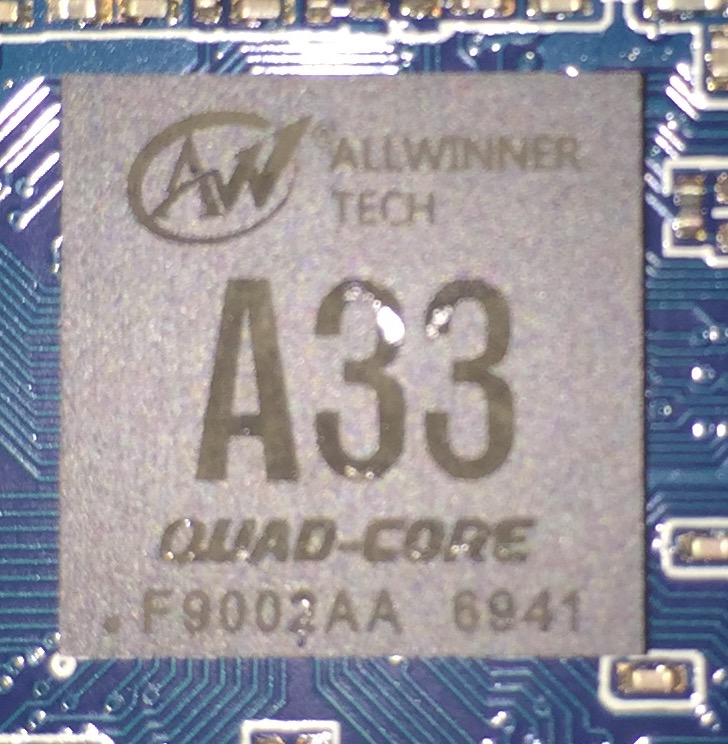

Allwinner A33
Jump to navigation
Jump to search
|  | |
| Manufacturer | Allwinner |
|---|---|
| Name | A33 |
| Architecture | armv7 |
| CPU | Quad-Core ARM Cortex-A7 @ 1.5 GHz |
| GPU | ARM Mali-400 MP2 600 MHz |
| Year | 2014 |
| Process | 40nm |
| Mainline | yes |
| Community Page | https://linux-sunxi.org/ |
| Components | |
| CPU |
Partial
|
| UART |
Works
|
| Storage |
Works
|
| USB |
Works
|
| Display |
Works
|
| GPU |
Partial
|
| Pinctrl |
Works
|
| I²C |
Works
|
| SPI | |
| Audio |
Partial
|
| Video |
Works
|
| Thermal |
Works
|
| WiFi |
Unavailable
|
| Bluetooth |
Unavailable
|
| Modem |
Unavailable
|
| GPS |
Unavailable
|
| Camera |
Partial
|
| Suspend |
Partial
|
{kind=link}
Devices
| Device | Codename | Mainline |
|---|---|---|
| iNet Tek D70 A33 | inet-a33 | Y |
| Oysters T74ER | oysters t74er | Y |
Allwinner A33 (sun8i) SoC features a Quad-Core Cortex-A7 ARM CPU, and a Mali400 MP2 GPU from ARM. It is a Quad-Core pin-to-pin-compatible version of A23 (which in turn is a lower power, cut-down, not-pin-compatible version of the A20).
It's now also called R16, targeted on miscellaneous IoT devices, such as Nintendo NES Classic Edition gaming console.
CPU
- ARM Cortex-A7 Quad-Core
- 512 KB L2-Cache (shared between four cores)
- 256 KB (Instruction) / 32 KiB (Data) L1-Cache per core
- SIMD NEON, VFP4
- Virtualization
- Large Physical Address Extensions (LPAE) 1 TB
GPU
- ARM Mali400 MP2
- Featuring 1 vertex shader (GP) and 2 fragment shaders (PP).
- Complies with OpenGL ES 2.0
Memory
- DDR3/DDR3L controller
- NAND Flash controller and 64-bit ECC
Video
- Full HD 1080p video decoding of MPEG-2, MPEG-4 SP/ASP GMC, H.263, H.264, WMV9/VC-1, and VP8
- BD Directory, BD ISO and BD m2ts video decoding
- H.264 High Profile 1080p @ 30 fps encoding
- 2160×1080 @ 30 fps 3D decoding
- Complies with RTSP, HTTP,HLS,RTMP,MMS streaming media protocol
Display
- CPU/RGB/LVDS LCD interface 1280x800 resolution
- MIPI DSI interface up to 1280x800 resolution
Camera
- Integrated parallel 8-bit I/F YUV sensor
- Integrated 24-bit parallel YUV 444 I/F
- 5M/8M CMOS sensor support
- Dual-sensor support
Audio
- Integrated HI-FI 100 dB Audio Codec
- Dual MIC noise cancellation
PMIC
- X-Powers AXP223, designed for the A23, connected via Allwinner's Reduced Serial Bus (RSB)
Documentation
- A33 User Manual v1.0 (PDF, 580 pages, 2014-05-25)
- A33 Datasheet v1.0 (PDF, 35 pages, 2014-05-21)
- A33 User Manual v1.1 (PDF, 574 pages, 2014-09-22)
- A33 Datasheet v1.1 (PDF, 35 pages, 2014-09-22)
- R16 Hardware Design Materials (Source)
- A33 Development Materials